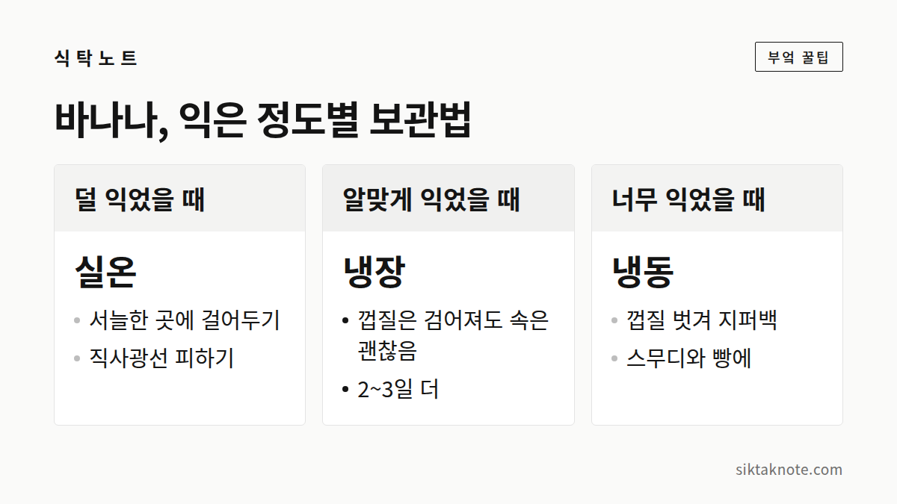

바나나 오래 두고 먹는 법 — 익는 속도 늦추는 보관법

3줄 요약
- 바나나는 한 개씩 떼어 두거나 꼭지를 랩으로 감싸 주면 천천히 익습니다.
- 알맞게 익으면 냉장고로 옮겨요. 껍질은 검어져도 속은 괜찮아요.
- 너무 익었다면 껍질을 벗겨 얼려 두고 스무디나 빵에 쓰면 됩니다.

송이째 두면 같이 익어 버려요
사다 둔 바나나가 며칠 만에 한꺼번에 노래졌다가 까매져서 곤란했던 적, 있죠. 바나나는 익으면서 에틸렌이라는 가스를 내는데, 이 가스가 다른 바나나를 더 빨리 익게 합니다. 송이로 두면 서로의 가스 때문에 다 같이 익어 버리는 거예요. 그래서 한 개씩 떼어 두는 게 좋습니다.
송이째 둘 거라면 꼭지를 감싸 주세요. 꼭지 부분에서 가스가 많이 나온다고 알려져 있어서, 랩이나 호일로 감싸면 익는 속도를 늦출 수 있습니다. 꼭지 끝이 드러나지 않게 빈틈없이 덮어 주세요. 익는 속도를 아주 멈추는 건 아니고 늦춰 주는 정도라서, 며칠에 한 번은 껍질 색을 살펴보는 게 좋겠습니다.

실온에서는 서늘한 곳에, 익으면 냉장고로
직사광선과 열기가 닿지 않는 곳이 좋습니다. 걸이에 매달아 두면 아래쪽이 눌려 멍드는 것도 막을 수 있고요. 그러다 먹기 좋게 익었다 싶으면 냉장고로 옮기세요. 속은 2~3일 더 먹을 만하고, 껍질만 검게 변할 뿐 속은 괜찮습니다.
계절도 살펴야 하는데요. 한여름에는 실온에서도 금방 익으니 하루 이틀 간격으로 상태를 보시는 게 좋습니다. 반대로 난방을 하지 않는 겨울 베란다처럼 13도 아래로 내려가는 곳은 바나나에게 너무 춥습니다. 껍질이 칙칙해지고 제대로 익지 않을 수 있다고 알려져 있어요.

먹기 좋게 익었는지는 껍질로 알 수 있습니다
껍질에 초록빛이 남아 있으면 아직 덜 익은 거예요. 전체가 노랗게 되면 먹기 좋은 때고, 갈색 반점이 올라오기 시작하면 단맛이 한층 오른 때예요. 농촌진흥청 자료에서도 이렇게 반점이 생긴 뒤에는 3일 안에 먹기를 권하고 있습니다. 껍질이 어두워지고 손으로 눌렀을 때 쑥 들어갈 만큼 물러졌다면 냉동할 때가 된 겁니다.
냉장고에 넣으면 껍질이 까매지는 이유
바나나는 차가운 온도에 약해서, 냉장고에 넣으면 껍질 세포가 상하며 갈색이나 검은색으로 변합니다. 13도 아래에 오래 있으면 저온 장해를 입는다고 알려져 있는데, 냉장고 안은 이보다 훨씬 차갑거든요. 과육 상태와는 별개라서 껍질만 보고 상했다고 판단하지 않으셔도 됩니다. 다만 덜 익은 바나나를 냉장하면 제대로 익지 않고 맛이 밍밍해지니, 알맞게 익은 뒤에 넣어 주세요.
너무 익었어도 버리긴 아까워요
껍질에 갈색 반점이 잔뜩 올라온 바나나는 오히려 단맛이 강합니다. 껍질을 벗겨 먹기 좋게 썰고, 지퍼백에 납작하게 펴서 얼려 두세요. 얼린 바나나는 우유와 갈아 스무디로 만들거나, 으깨서 바나나빵과 팬케이크에 쓰기 좋습니다. 해동하면 물러지니 쓸 때는 녹이지 말고 바로 갈거나 으깨는 게 좋고요.
조각이 서로 붙어 한 덩어리가 되는 게 걱정이라면, 쟁반에 겹치지 않게 펴서 먼저 살짝 얼린 뒤 지퍼백에 옮겨 담으시면 됩니다. 지퍼백 속 공기는 최대한 빼 주고요.
다른 과일과 한자리에 둘 때
사과, 토마토 같은 과일도 에틸렌을 내보내서 바나나를 더 빨리 익히는데요. 거꾸로 덜 익은 아보카도나 키위를 빨리 익히고 싶을 땐 바나나와 같은 봉지에 넣어 두면 도움이 됩니다. 사과를 따로 두는 쪽의 사정은 사과 보관법에 적어 두었습니다.
자주 받는 질문 몇 가지
바나나를 빨리 익히려면 어떻게 해요? 종이봉투에 사과 한 알과 함께 넣고 입구를 느슨하게 접어 두세요. 사과가 내는 에틸렌이 봉투 안에 머물러서 익는 속도가 빨라집니다. 하루 이틀 간격으로 확인해 주세요.
바나나 속에 갈색 점이나 줄무늬가 보이는데 먹어도 돼요? 곰팡이가 없고 시큼한 냄새도 나지 않는다면 먹어도 괜찮아요. 하지만 냄새가 이상하거나 즙이 흐른다면 버리는 게 안전합니다.
과육에 붙은 실 같은 건 떼야 하나요? 먹어도 괜찮아요. 식감이 신경 쓰이면 떼어내고 드세요.
이런 바나나는 보내 주세요
곰팡이가 피었거나 시큼한 발효 냄새가 나고, 과육이 흐물흐물해서 즙이 흐른다면 버리시는 게 좋습니다.
바나나는 가만 두면 알아서 서둘러 익는 성격이라, 익는 속도만 살짝 붙잡아 주면 됩니다.